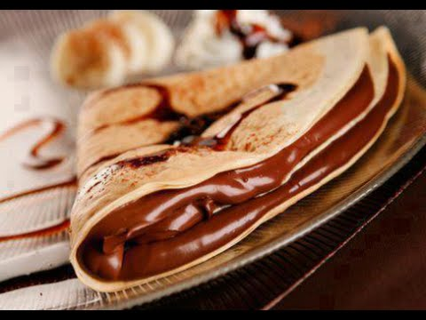

Elaboratión:
1. To prepare these crepes you will need two bowls. In one of them, mix milk and flour. In the other, beat the eggs with butter ointment. Next, mix the content of both bowls. Let the pasta sit for 15 minutes at room temperature.
2. Grease a skillet using kitchen paper impregnated with oil. Heat it and put some pasta in the pan forming a pancake of approx. 26 cm in diameter. Cook it on both sides until it acquires a uniform golden tone. Serve the pancakes stuffed with about 15 g of Nutella and fresh fruit.
